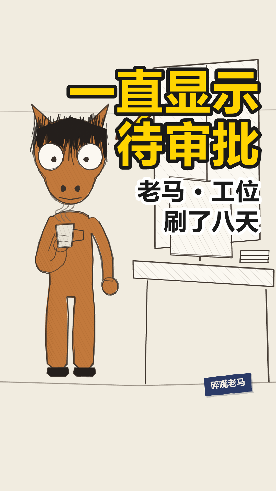

laoma-010
成片 · 场景图 · 对话内容 · 音色设置 · 分析思路
laoma-010
out.mp4 0.0s
0.0s我的单子交上去八天了
 2.6s
2.6s系统里一直显示待审批
 5.4s
5.4s我不知道点那个按钮的人是谁
 8.8s
8.8s我每天早上刷一次，下午再刷一次
 13.2s
13.2s今天九点四十七，七张单子一起通过了
 17.6s
17.6s我这儿也压着一张，压了三天
封面 / 开场 / 定格 / 钩子



落地方案 · 分镜表 · 发布文案方案.md ↗
老马的第 1858 天 落地方案
带AUTO标记的区块由npm run preview从当前配置重新生成，改了会被覆盖。
其余部分随便改，重新生成时原样保留。
一、稿件定位
- 类型 A 类（对话反转，一句 punch 驱动全片）
- 一句话讲什么 他抱怨了九条片子的那套流程，这一条里他自己就是其中一环 ——
而且他在这一环上做的事，跟他抱怨别人做的一模一样。
- 视角 共谋者（horse_standup_plan §六之二 的四档里唯一一次都没用过的那档）。
前九条老马永远是被卡住的人或者旁观的人，干净久了就成了「一个总在被亏待的人」，
那离抱怨只有一步 —— 而抱怨正是 §一 开篇要躲开的东西。
- 为什么这么分镜 一镜到底、镜头不动，只在第 5 句给一次 -12° 扭头。
这一条的转折是视角翻面不是场景变化，切镜会把注意力引到画面上去。
- 不能动的地方
- 第 3 句那个「第九百三十七天」 它跟收尾卡的 1858 是同一条轴上的两个点，
观众自己会算中间那两年半。天数咬合九条里一次都没做过，动了这一条就白搭
- 第 5 句是配额句（emotionLine: 5） 全片唯一一句带情绪的。
加第二句就违规（v3 §2 约束③），删掉它这条片子仍旧成立、只是变冷
- 落点不许挪到第 5 句后面去补一刀 §一之八 说完就停
- opening.style: "voice-first" 物件「按钮」库里没有画法，走不了缺省的档 ③；
别拿 系统 顶替，那张审批单画死了七个节点，那个七是 007 的数
二、分镜表
| 时间 | 画面 | 台词 | 音效 / BGM |
|---|---|---|---|
| 0:00.0–0:00.0 | 开场空镜 场景 office-desk | — | BGM 关 |
| 0:00.0–0:01.7 | 场景 office-desk 在场 ma 单人镜 | ma：我的单子交上去八天了 | — |
| 0:02.6–0:04.5 | 同上 | ma：系统里一直显示待审批 | — |
| 0:05.4–0:07.1 | 同上 | ma：我不知道点那个按钮的人是谁 | — |
| 0:08.8–0:11.4 | 同上 | ma：我每天早上刷一次，下午再刷一次 | — |
| 0:11.5–0:12.4 | 闭目 0.9s 不是眨眼 —— 忍耐 | — | 静音 |
| 0:13.2–0:16.2 | 同上 | ma：今天九点四十七，七张单子一起通过了 | — |
| 0:17.6–0:20.6 | 同上 | ma：我这儿也压着一张，压了三天 | — |
| 0:20.6–0:25.2 | 定格去色 + 钩子字幕「老马的第 1858 天」 | — | BGM 骤停 |
三、场景 / 角色 / 节奏
场景 office-desk
节奏 banter
句内 0.18/0.12s 句间 0.35s 换镜 0.50s
| 角色 | 形象 | 音色 |
|---|---|---|
| ma | horse x=290 | 老马 |
片长 25.15s 6 句 1 个分镜
四、发布文案
发平台时直接抄这一段。
- 标题候选
1. 我在那个系统里管一个按钮 ←主选
2. 单子到我这儿，我一般放三天
3. 我拿到这个按钮，是第九百三十七天
- 为什么是第 1 个 它是钩子原句，给身份不给结果 —— 「管一个按钮」听着像个笑话，
点进来才知道是什么按钮。跟封面大字「我管一个按钮」是同一句的两个长度，两边不打架。
第 2 个把第 4 句那条规律抖在标题上，进来就没有可认的规律了；
第 3 个那个数是天数咬合用的，摆在标题上观众没有参照系，只是一串数字。
- 副标题
老马 · 工位 单子到我这儿，一般放三天 - 内容关键词 审批 / 流程 / 工位 / 打工人 / 系统
- 热度关键词 审批流程 / 走流程 / 职场 / 上班这件事 / 打工人日常
- 话题标签 #职场 #上班这件事
- 简介
> 我在那个系统里，管一个按钮。单子到我这儿，我点一下才能往下走。
>
> 我拿到这个按钮，是第九百三十七天。
> 我一般让它在那儿放三天。
- 封面大字
我管一个按钮
五、人工核对
- 每一镜的画面和台词对得上（看 index.html 的场景图）
- 音画同步：配音起点落在字幕窗口内
- 站位：
npm run layout零冲突 - 节奏：句间缓冲听着不赶
- 内容风控